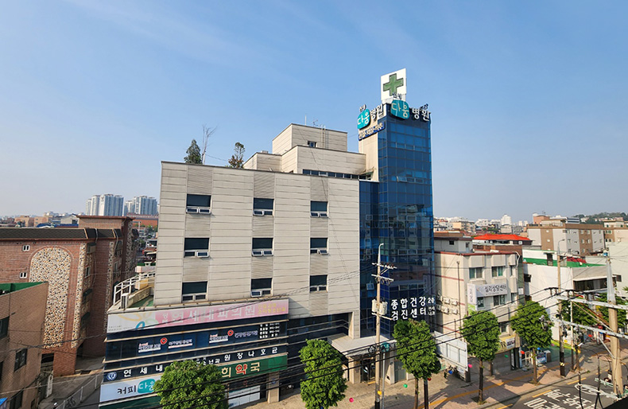

Services
Explore orthopedic care, physical therapy, rehabilitation, pediatric orthopedics, and pain care.
View services →Yonsei Dawoom Hospital
Orthopedic care, physical therapy, rehabilitation, and international patient guidance for local residents, visitors, and U.S. military families.

Explore orthopedic care, physical therapy, rehabilitation, pediatric orthopedics, and pain care.
View services →Find the hospital address, bus access, parking details, and arrival guidance before your visit.
Get directions →Get help with translation, reservations, foreign insurance questions, and U.S. military visits.
Plan your visit →Our promise
Since opening in 2001, Yonsei Dawoom Hospital has grown through the trust and support of our patients. We are grateful for every visit and remain committed to caring for each patient with responsibility, attention, and respect.
Our team provides specialized orthopedic, rehabilitation, and pain care for patients in Pyeongtaek and international visitors who need clear guidance before, during, and after treatment.

EXT
Main hospital building in Pyeongtaek.
Plan your visit
Find directions, parking details, and appointment support for your first visit.